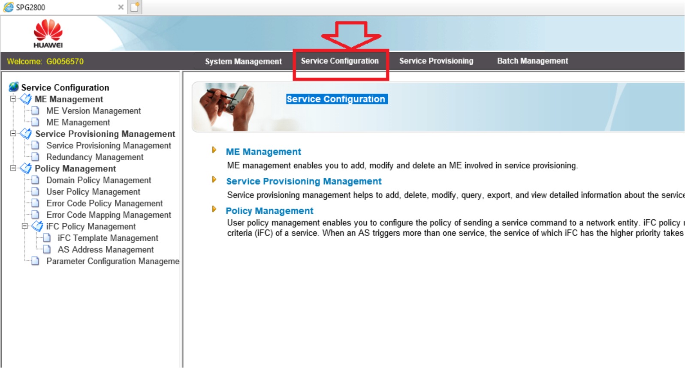
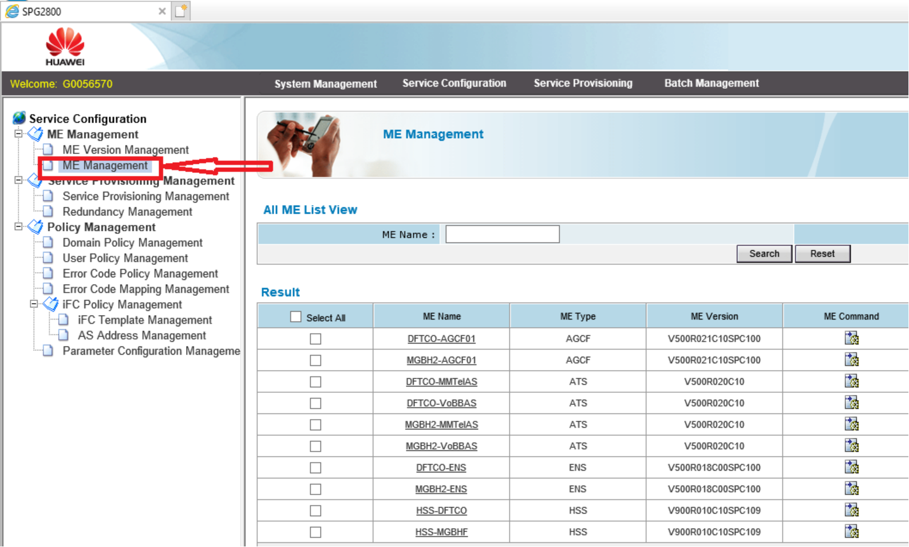
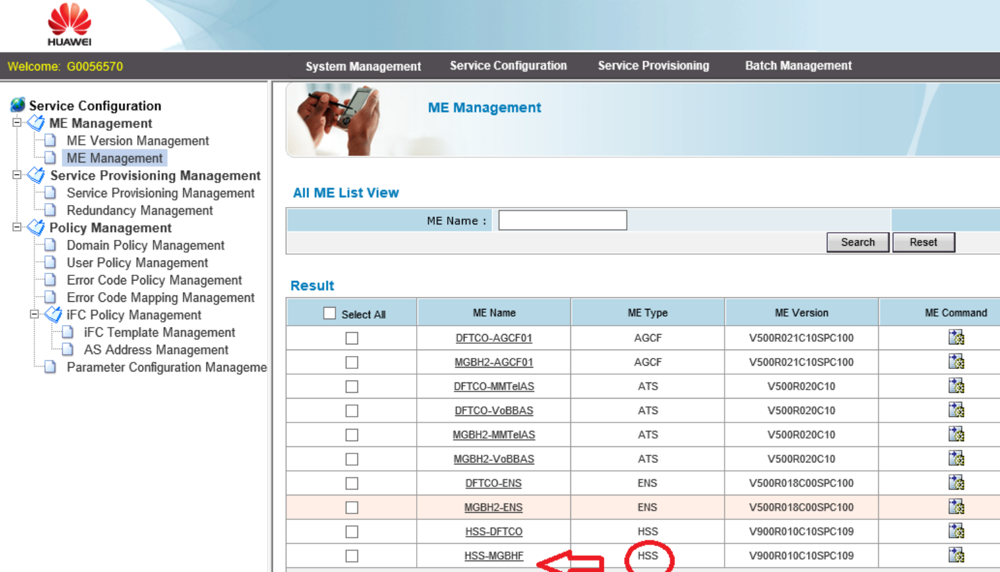
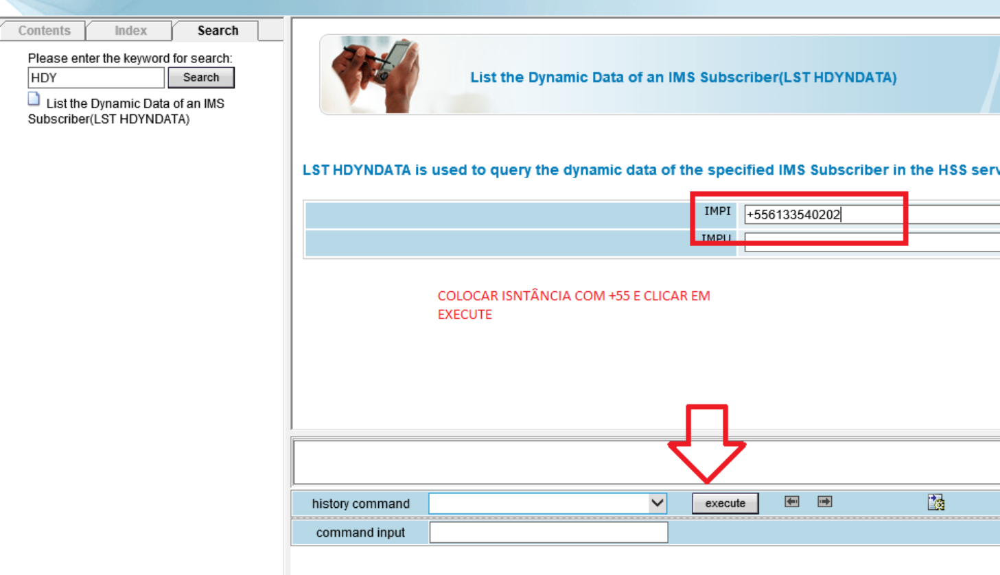
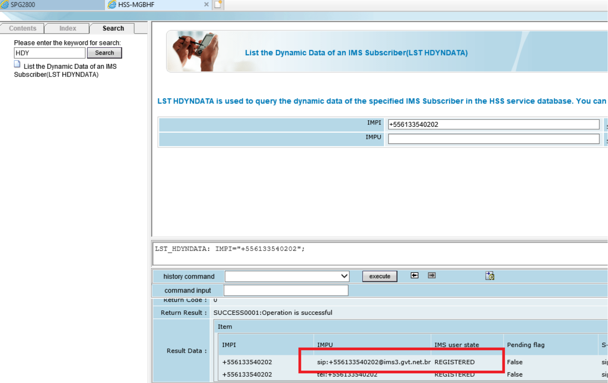

Como verificar alarme via Putty

Como converter Slot e Porta para Cabo e Primária via Sigres

Após abrir a central, clicar em Service Configuration.
Depois clicar em ME management.
Procurar o HSS desejado e clicar nele.
Colocar em IMPI o número da instância com o +55 e clicar em execute.
Após execute, aparece se a linha esta registrada logo abaixo.
